Logo i wersje
Lajkonektor
Lajkonektor

Lajkonektor
Lajkonektor
 Pełny kolor od 32 px. Poniżej (ikona, karta przeglądarki) tylko jednobarwna sylwetka. Pole ochronne: szerokość dzwonka węzła.
Pełny kolor od 32 px. Poniżej (ikona, karta przeglądarki) tylko jednobarwna sylwetka. Pole ochronne: szerokość dzwonka węzła.
Kolory z SIW Krakowa
Niebieski
#0063AF
Pantone 2945 C
#0063AF
Pantone 2945 C
Niebieski ciemny
#00488E
Pantone 294 C
#00488E
Pantone 294 C
Żółty
#FFCC00
Pantone 116 C
#FFCC00
Pantone 116 C
Złoty
#CDB794
Pantone 465 C
#CDB794
Pantone 465 C
#071F32 tekst
#F5F5F5 tło
#AF1828 utrudnienia
#2E7D32 aktualne
Kroje pisma
Ubuntu Medium: logotyp, znaki
Lajkonektor
abcdefghijklłmnńoóprsśtuwyzżź
Lato: cały tekst (Black 900 · Bold 700 · Regular 400)
Odjazdy na żywo
Parki w zasięgu 500 m
Dane z Otwartych Danych Krakowa, MSIP, GUS i ZTP. Liczby liczy kod, nie model.
Kwadratowe narożniki, belka tytułowa i kafle jak na krakow.pl. Na ciemnym niebieskim znak zawsze na białej tarczy, bo granatowe kontury giną na tle. Żółty tylko jako akcent.
Znak własny projektu. Nie jest herbem ani logo Miasta Krakowa. Użycie herbu wymaga zgody Miasta (SIW 1.2).